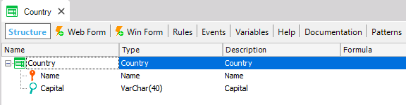
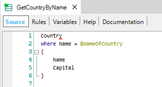
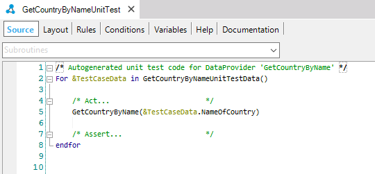
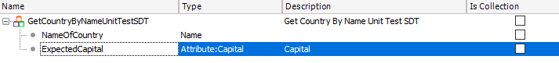
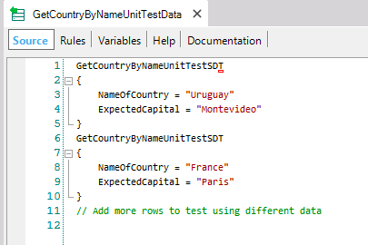
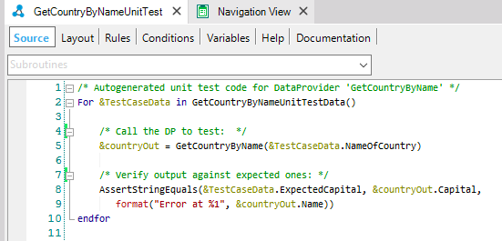

Data Provider objects provide data collection or data structure in an easy, and high-level declarative way. Their output can be a Structured Data Type or a Business Component. You may want to test if your Data Provider is working properly. Consider the following basic example. Suppose a Transaction object called “Country” (which has its Business Component property set to True) with the following structure:  Suppose you also have a Data Provider object which receives the name of a country as a parameter and returns a variable based on a Country Business Component with the name and the capital of it. A Unit Test object can verify that the Data Provider is returning the information correctly. In order to do that, being in the KB Explorer you can right-click on the Data Provider and select in the contextual menu: Create Unit Test.  Then, an auto-generated skeleton of your Unit Test is created:  You need to add to the SDT the data you want to check, in this case, you want to check the Capital of each country:  After that, just define data to test in the corresponding test's Data Provider:  And modify your test adding an assertion between the result of the call (GetCountryByName) against test data expected (&TestCaseData):  |
| Backlinks | |
| Creating Unit Tests | Category:Unit Test object |